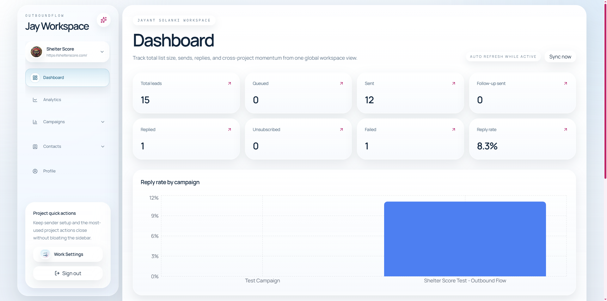

Contacts stop living in the same CSV forever.
Bring in lists manually, by CSV/XLSX, or through a public Sheet import and keep the audience visible while the sequence is still being built.
Outbound campaign workspace
Import leads, send from Gmail, and keep every reply, follow-up, and campaign update in one shared workspace.
Built for founders, lean sales teams, and agencies that want clean execution without adding more software.
Product
OutboundFlow replaces the spreadsheet shuffle, disconnected Gmail threads, and fragmented launch process with one operating surface built for actual outbound work.
Bring in lists manually, by CSV/XLSX, or through a public Sheet import and keep the audience visible while the sequence is still being built.
Choose the mailbox, apply the message, launch immediately, and keep mailbox activity tied to the campaign record instead of scattered through personal tabs.
Reply-aware campaign logic, shared inbox visibility, and live thread sync keep the whole team aligned on what changed and what needs attention next.
Campaign orchestration
Create outreach with clear step logic, live contact visibility, and launch controls made for operators who need campaigns live now.
Reply capture
Threads, sends, and replies stay tied to the contact record so the team can review, respond, and keep campaign health current without chasing context.

Workspace clarity
Contacts, mailboxes, analytics, CRM sync, and seed monitoring stay scoped correctly while the team moves fast inside a lightweight stack.
Workflow
OutboundFlow stays opinionated where it helps and lightweight where the operator needs speed.
Pull in contacts from files or a public Google Sheet and keep the list visible before you launch.
Pick the sender, apply the template, and move from draft to live campaign without leaving the builder.
When a lead answers, the reply lands back in the product so the team can review and respond with context.
Built for
The product is shaped for the operators who need shared visibility without carrying an enterprise stack on top of the actual work.
Proof
OutboundFlow is built around the real operating loop: import, launch, monitor, reply, sync, and keep delivery visibility close to the work.
Replace spreadsheet juggling, personal Gmail digging, and disconnected analytics with one operational surface.
The moment a lead answers, your team can see it in the inbox instead of discovering it later in a mailbox.
Contacts, copy, mailbox setup, and campaign sends are handled in the same product, so campaigns do not stall mid-build.
Ready to move faster
Connect Gmail, load contacts, save the sequence, and keep replies visible from day one.